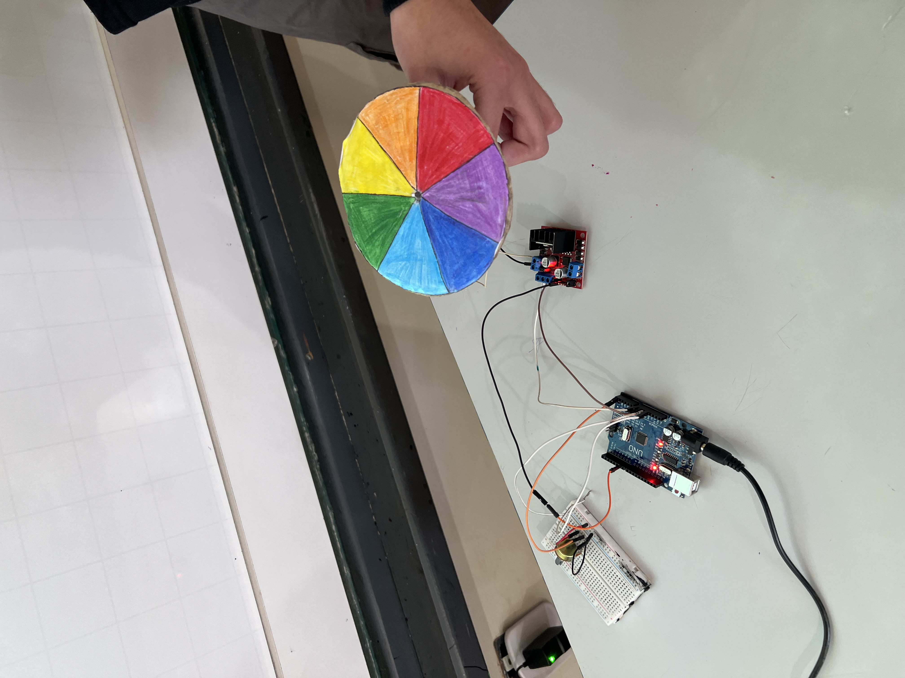

Disco de Newton

O Disco de Newton e um dispositivo inventado pelo fisico Isaac Newton para demonstrar de forma pratica a decomposicao e recomposicao da luz. Ele prova que a luz branca do Sol e, na verdade, a mistura de todas as cores do arco-iris.
Como Funciona:
- Cores basicas: O disco e dividido em setores circulares pintados com as cores do espectro visivel (vermelho, laranja, amarelo, verde, azul, anil e violeta).
- Rotacao rapida: Quando o disco gira em alta velocidade, as cores se misturam diante dos nossos olhos.
- Resultado visual: O disco passa a parecer branco (ou cinza-esbranquicado, dependendo da fidelidade das cores e da iluminacao do ambiente).
- Fenomeno biologico: Isso acontece devido a persistencia retiniana, uma ilusao de optica onde o olho humano retem a imagem de cada cor por uma fracao de segundo, sobrepondo-as no cerebro.
Materiais Necesarios:
- Papel cartao ou papelao (para a base);
- Compasso ou um CD antigo (para fazer o circulo);
- Lapis de cor, giz de cera ou canetinhas nas 7 cores do arco-iris;
- Regua e lapis comum;
- Tesoura sem ponta;
- Suporte para girar (lapis, palito de churrasco ou barbante);
- Cola branca ou quente.
.jpg)